相交隧道处的矿柱荷载
问题描述
注意
在 FLAC3D 中查看此工程：
- 选择“ExampleApplications”
- 选择“Pillar”
- 选择“pillar.f3dprj”以加载
该工程的主数据文件（main data file）在本示例末尾给出。
图 1（Figure 1） 所示的矿山布置代表崩落法采矿作业中的一个生产水平。巷道通常先于采矿提前掘进，最初承受原位应力状态。随着开采的推进，矿柱承受的竖向荷载增大。
本示例的目的是首先研究开挖体（在原位应力下）的初始响应，然后确定矿柱所能承受的峰值荷载。同时还要确定该矿柱比相同宽度和高度的方形矿柱强多少。

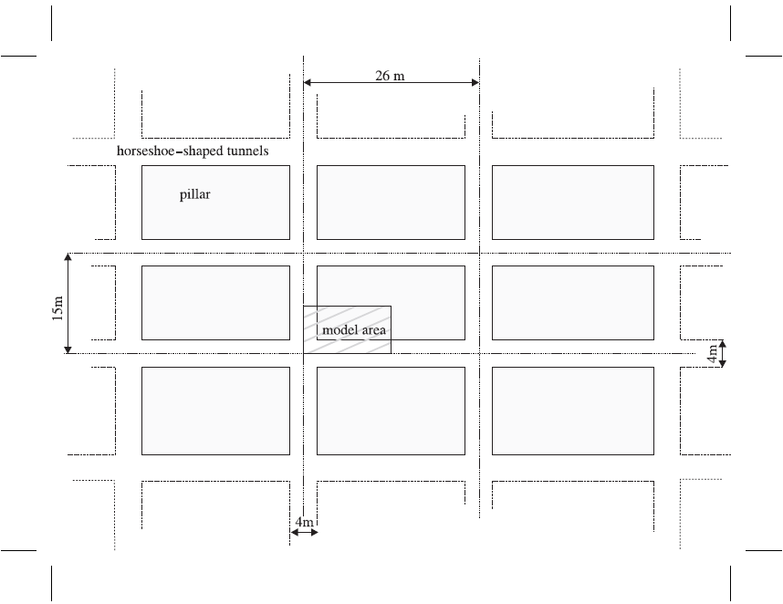
图 1：矿山布置。
所考虑的初始应力状态为
\(σ_{xx}\) = 25 MPa（东西向）
\(σ_{yy}\) = 30 MPa（南北向）
\(σ_{zz}\) = 17 MPa（竖直向）
岩体的材料性质见表表 1（Table 1）。
| 体积模量 | 14.1 GPa |
| 剪切模量 | 8.9 GPa |
| 摩擦角 | 35°（峰值） |
| 黏聚力 | 4 MPa（峰值） |
| 剪胀角 | 5° |
| 抗拉强度 | 0.5 MPa |
岩体为中等至良好质量岩体（地质强度指标 \(GSI \approx\) 70），其行为表现为应变软化材料：临界塑性剪应变为 0.5%，在塑性剪应变达到 2% 之后黏聚力完全丧失且摩擦角下降 5 度；此处假定矿柱的分辨率（沿矿柱高度的网格单元数）为 20。
建模步骤
出于对称性考虑，FLAC3D 模型用于研究矿柱的四分之一剖面，如图 1（Figure 1）所示。图 2（Figure 2） 给出了使用 FLAC3D 内置的 building-blocks block create 工具创建的最终网格。

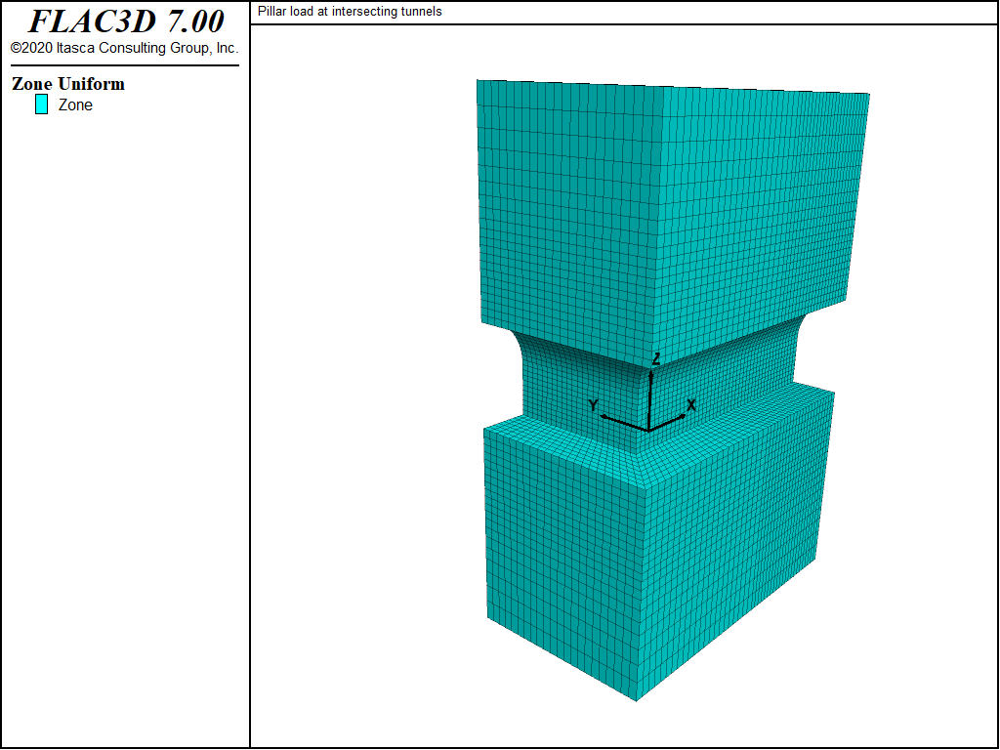
图 2：最终模型网格。
初始响应的边界条件为：模型侧面和底部为滚动边界，模型顶部施加 17 MPa 的竖向应力。为确定矿柱所能承受的峰值荷载，将模型顶部的竖向速度固定为常数 -4 × 10-6 m/step。模型底部的反力之和通过 FISH 函数 s _base 获得。
本问题的数据文件“pillar.dat”列于本节末尾。
结果
图 3（Figure 3） 给出了隧道开挖后的 Z 向位移云图。正如预期，大部分底鼓（约 5.1 mm）和拱顶位移（约 8.2 mm）发生在相交处。图 4（Figure 4） 给出了矿柱中部高度的塑性状态。破坏区的范围从矿柱中心的 67 cm 到相交处的 1.5 m。图 5（Figure 5） 给出了矿柱中部高度的竖向应力云图。该平面内的竖向应力接近最小主应力（即最大的负应力 \(σ_1\)），因此最大的压应力位于矿柱角部附近塑性区边界的邻近区域。图 6（Figure 6） 给出了矿柱内部最小主应力的云图。此时矿柱核心区相对无应力，隧道周围的应力集中是最显著的特征。
此时，模型顶部的压力边界条件替换为速度边界条件。图 7（Figure 7） 给出了底部平均竖向应力的演化（即模型底部的竖向反力之和除以底部面积：13 m × 7.5 m）。请注意，矿柱内的平均竖向应力将大一个倍数 \(F\)，其等于
底部的峰值平均竖向应力约为 31.9 MPa，因此矿柱内的峰值平均竖向应力为 51.4 MPa。
对矿柱底部平均竖向应力为 29 MPa 时、峰值应力之前和之后的矿柱应力进行了比较。图 8（Figure 8） 和 图 9（Figure 9） 给出了峰值前后的破坏范围。请注意，在达到峰值应力之后，矿柱横截面约有 30% 仍保持弹性。这与 Wagner（1980）的观测结果一致。图 10（Figure 10） 和 图 11（Figure 11） 给出了峰值前后的竖向应力云图。尽管两图中矿柱的平均竖向应力相同，但峰值后最大压应力更高、卸压区更大。

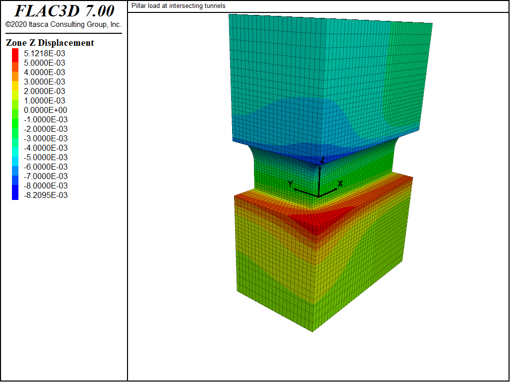
图 3：隧道开挖后的位移云图。

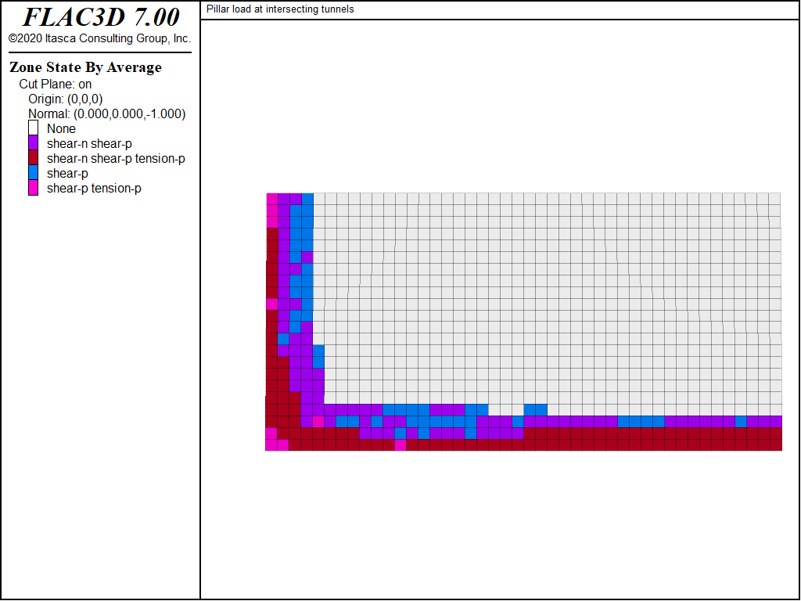
图 4：隧道开挖后矿柱中部高度的塑性状态。

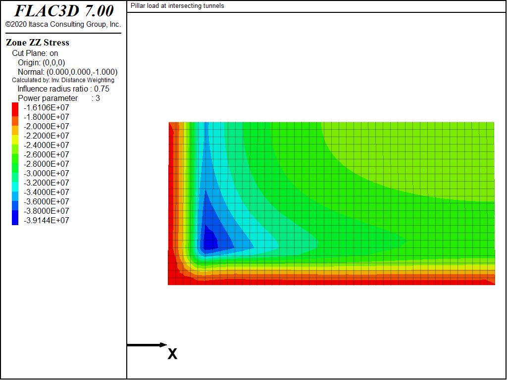
图 5：隧道开挖后矿柱中部高度的竖向应力云图。

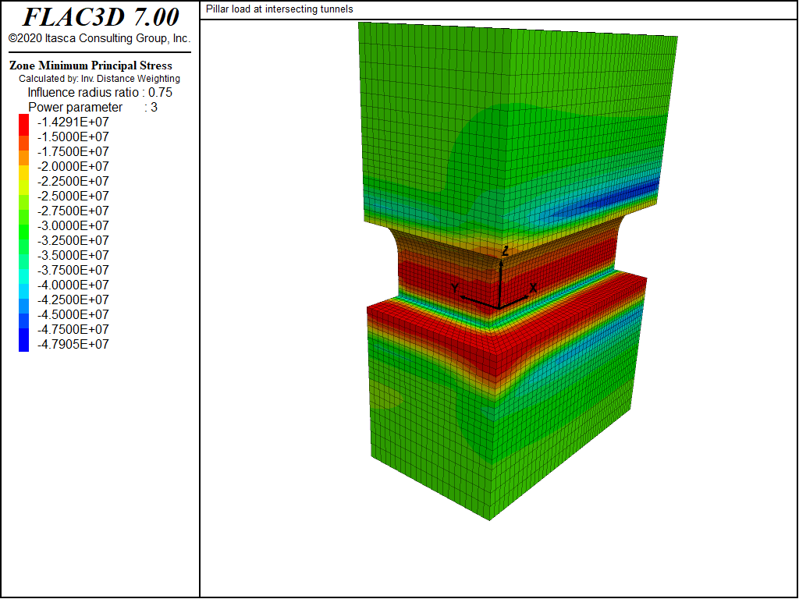
图 6：隧道开挖后矿柱内的最小主应力云图。

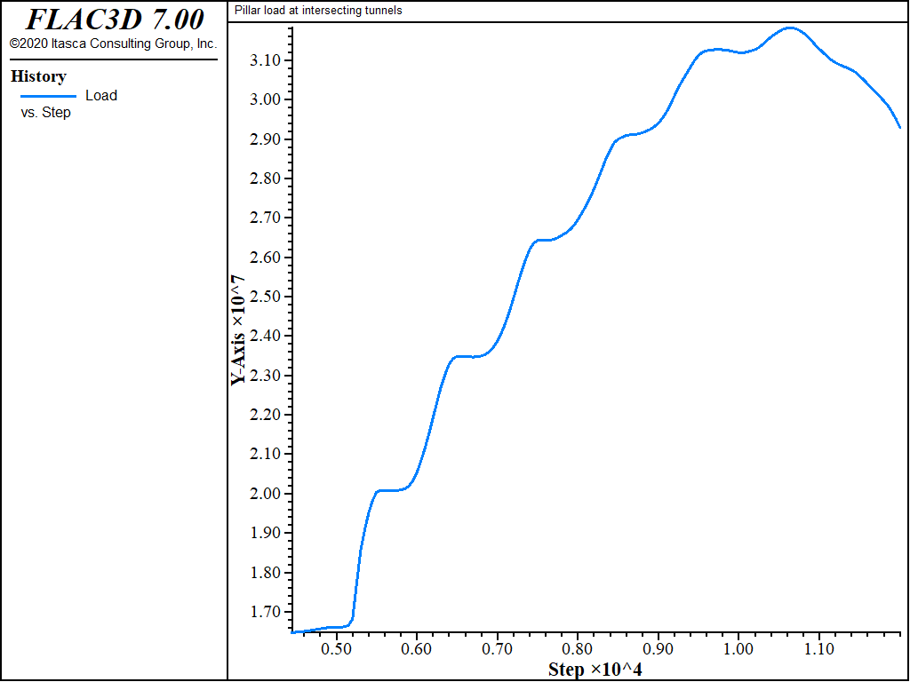
图 7：底部平均竖向应力的时程。

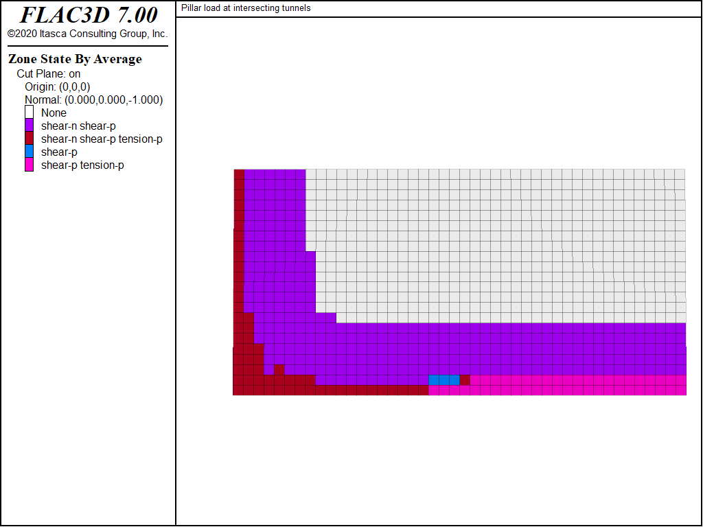
图 8：底部平均竖向应力为 29 MPa 时、峰值应力之前矿柱的塑性状态。

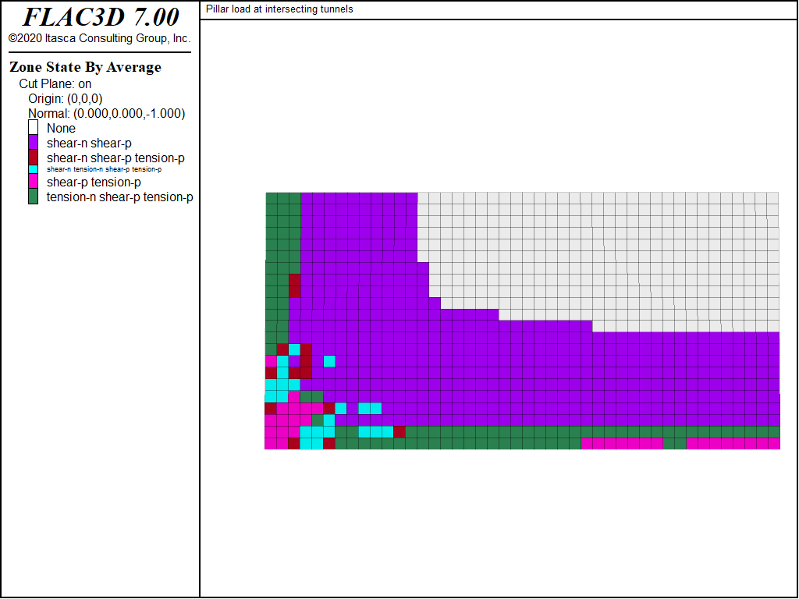
图 9：底部平均竖向应力为 29 MPa 时、峰值应力之后矿柱的塑性状态。

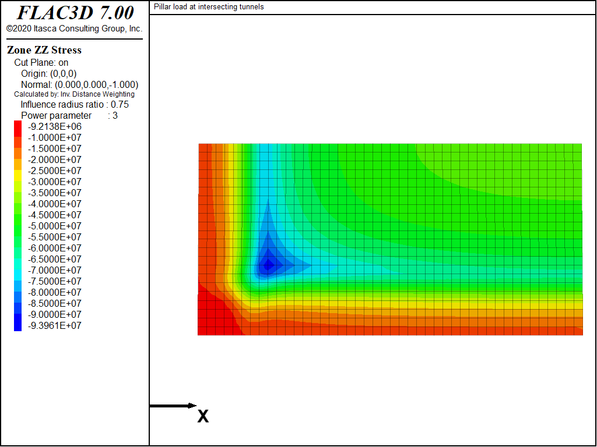
图 10：平均竖向应力为 29 MPa 时、峰值应力之前的竖向应力云图。

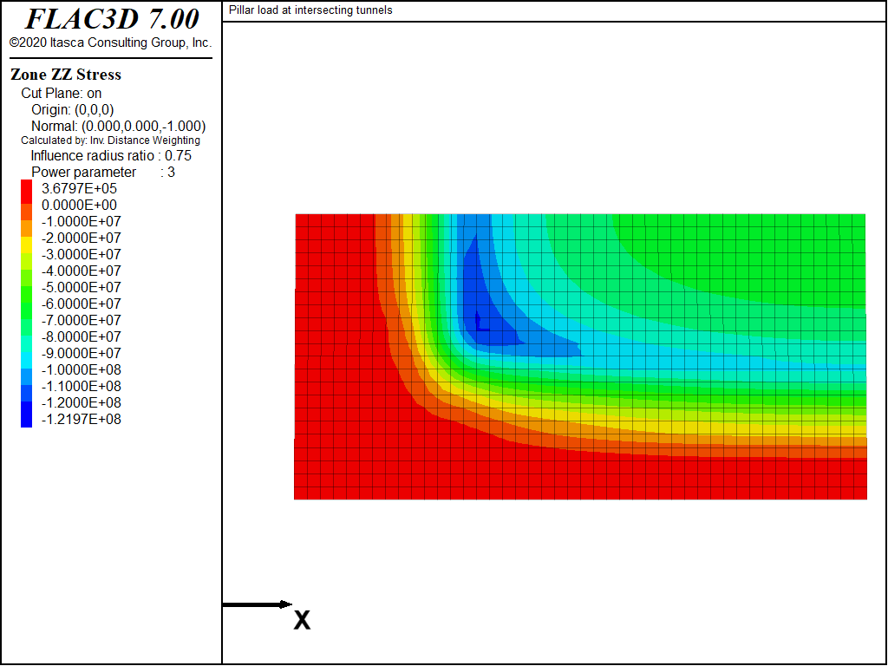
图 11：平均竖向应力为 29 MPa 时、峰值应力之后的竖向应力云图。

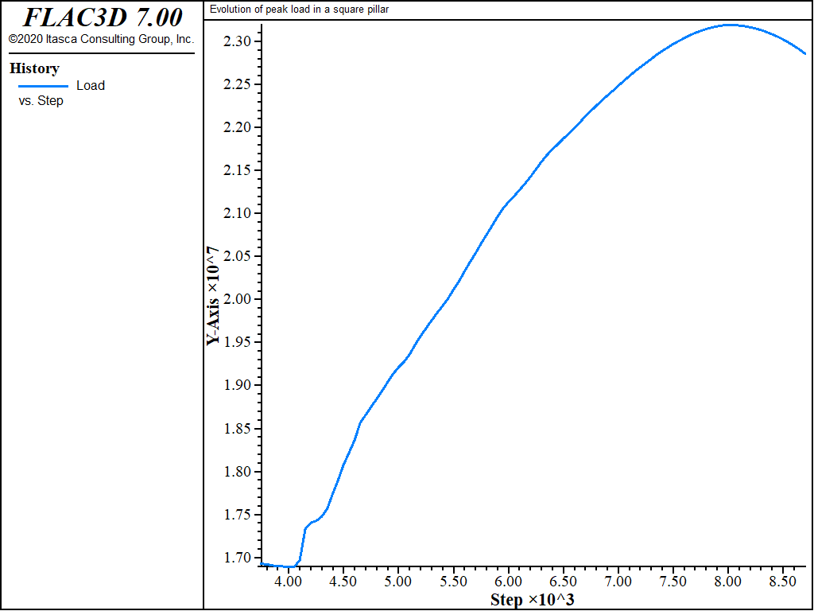
图 12：方形矿柱底部平均竖向应力的时程。
讨论
矿柱强度
许多已发表的矿柱强度公式通常表示为如下形式的经验幂律关系
其中 \(k\) 为强度参数，\(V\) 为矿柱体积，\(R\) 为矿柱的宽高比，\(a\) 和 \(b\) 为经验参数。
这些表达式基于方形矿柱，未考虑矿柱的长度。Wagner（1980）将不规则矿柱的有效宽度定义为
其中 \(A\) 为作业面积，\(C\) 为矿柱周长。对于矩形矿柱，有效宽度为
其中 \(w\) 为矿柱宽度，\(l\) 为矿柱长度。利用这些方程可以确定，矩形矿柱比相同宽度和高度的方形矿柱强，其倍数 \(F_p\) 为
该方程连同不同作者发表的 \(a\) 和 \(b\) 值，可用于预测方形矿柱的强度。
| 来源 | a (m) | b (m) | 预测强度（MPa） |
|---|---|---|---|
| Salamon 和 Munro（1967） | -0.067 | 0.59 | 44.11 |
| Greenwood 等（1939） | -0.111 | 0.72 | 43.81 |
| Holland 和 Gaddy（1957） | -0.167 | 0.83 | 44.12 |
数据文件 pillar-sq.dat 模拟方形矿柱的八分之一，其性质和初始应力条件与前面研究的矩形矿柱相同。图 12（Figure 12） 给出了该模型底部竖向应力的演化。矿柱中的峰值应力将为
该值与采用 Wagner 方法预测的强度相比具有良好的一致性。
网格依赖性
应变软化材料更容易产生剪切带（局部化）。FLAC3D 中的剪切带会缩窄到网格所能分辨的最小宽度：若剪切带与网格平行，则为一个网格宽度；若剪切带以任意角度斜交网格，则约为三个网格宽度。尽管 FLAC3D 能够正确模拟剪切带形成的整体物理过程，但剪切带的厚度和间距取决于网格。此外，若将应变软化模型用于具有弱化特性的材料，FLAC3D 对模拟试验所生成的荷载/位移关系将强烈依赖于网格。这是因为集中在剪切带内的应变取决于剪切带的宽度（以长度单位计），而该宽度又取决于网格单元尺寸，如前所述。因此，网格单元越小，软化程度越高，因为我们在给定软化曲线的应变轴上移动得更快。为修正这种网格依赖性，必须在本构模型中引入某种长度尺度。目前对于实现这一点的最佳方式仍存在争议。必须认识到，网格尺寸和角度会影响结果：模型必须针对所使用的每个网格进行校准。
在缺乏校准数据的情况下，建议以临界塑性剪应变 \(\gamma^{crit}_{p}\) = 0.5% 作为模拟高质量、完整原位岩体的起点，该岩体节理稀少、间距大且节理条件中等至良好（\(GSI \approx\) 70）。该应变值假定数值模型中约用 20 个网格单元来分辨控制稳定性的临界尺寸（例如矿柱高度）。若所用分辨率（\(R\)）不是 20 个网格单元，则该临界应变值应按 \(R\)/20 的比例缩放。对于岩体性能的详细研究，建议最小分辨率为 10~15 个网格单元。若要模拟质量更低或更高的岩体，该临界应变值应按 \((10-0.1 \times GSI)/3\) 的比例缩放。模拟质量极高的岩体（\(GSI\) > 90）时应谨慎，因为采用完全（或近乎完全）脆性可能导致不稳定。总之，临界塑性剪应变的建议起点为：
在本示例中，两个模型均假定为中等至良好质量岩体（\(GSI \approx\) 70）。由数据文件“pillar-sq.dat”建立的模型采用均匀网格单元（\(R\) = 20），因此软化速率无需缩放。然而，由数据文件“pillar.dat”建立的模型采用不规则网格单元。直接使用缩放方程较为困难，但其等效分辨率介于 16 和 20 之间，因此假定 \(R\) = 18，将软化速率按 0.9 的比例缩放。
关于一般情形下软化模型网格依赖性的更详细讨论见<用户指南相应章节位置的链接>。上文中的链接尚待建立；所链接的章节尚需撰写/更新。
参考文献
Greenwald, H. P., H. C. Howarth and I. Hartmann. “Experiments on Strength of Small Pillars of Coal of the Pittsburgh Bed,” U.S. Bureau of Mines, Technical Paper No. 605 (1939).
Holland, C. J., and F. L. Gaddy. “Some Aspects of Permanent Support of Overburden on Coal Beds,” in Proceedings of the West Virginia Coal Mining Institute, pp. 43-66 (1957).
Salamon, M. D. G., and A. H. Munro. “A Study of the Strength of Coal Pillars,” J. S. Afr. Inst. Min. Metall., 68, 55-67 (1967).
Wagner, H. “Pillar Design in Coal Mines,” J. S. Afr. Inst. Min. Metall., 81, 37-45 (1980).
数据文件
pillar.dat
;-------------------------------------------------------------
; 矩形矿柱中峰值荷载的演化
;-------------------------------------------------------------
model new
model large-strain off
fish automatic-create off
model title 'Pillar load at intersecting tunnels'
; 模型几何体——通过构建块工具创建，并从状态窗格导出
program call 'geometry'
zone generate from-building-blocks
zone face skin
; 本构模型和参数
zone cmodel assign strain-softening
zone property bulk 14.1e9 shear 8.87e9 tension 5e5 friction 35 ...
cohesion 4e6 dilation 5 table-friction 'fric' ...
table-cohesion 'coh'
table 'fric' add (0, 35) (0.0045, 35) (0.018,30) (1,30)
table 'coh' add (0,4e6) (0.0045,4e6) (0.018, 0) (1, 0)
; 初始化应力
zone initialize stress xx -25e6 yy -30e6 zz -17e6
; 边界条件
zone face apply velocity-normal 0 range group 'West1' or 'West2' or 'East'
zone face apply velocity-normal 0 range group 'South1' or 'South2' or 'North'
zone face apply velocity-normal 0 range group 'Bottom1'
zone face apply stress-normal -17e6 range group 'Top2'
; 求解初始开挖
model solve ratio-local 1e-3
model save 'pillar1'
; 向顶部施加速度，记录矿柱荷载历史
zone face apply velocity-normal -4e-6 range group 'Top2'
[global dim1 = 13.0]
[global dim2 = 7.5]
program call 'pillar-load'
history interval 50
fish history name 'load' load
model step 4000 ; 顶部总位移 -1.6e-2
model save 'pillar2'
model step 3600 ; 顶部总位移 -3.04e-2
model save 'pillar3'
pillar-sq.dat
;-------------------------------------------------------------
; 方形矿柱中峰值荷载的演化
;-------------------------------------------------------------
model new
model large-strain off
fish automatic-create off
model title 'Evolution of peak load in a square pillar'
; 创建几何体；此例中使用 zone create 较简单
zone create brick size (22,22,10) point 0 (2,2, -2) point 1 (7.5,2, -2) ...
point 2 (2,7.5, -2) point 3 (2,2,0)
zone create brick size (30,30,10) point 0 (0,0, -5) point 1 (7.5,0, -5) ...
point 2 (0,7.5, -5) point 3 (0,0,-2)
zone create brick size (30,30,10) point 0 (0,0,-10) point 1 (7.5,0,-10) ...
point 2 (0,7.5,-10) point 3 (0,0,-5) ...
ratio 1 1 0.9
zone face skin ; 命名模型边界
; 分配本构模型和属性
zone cmodel assign strain-softening
zone property bulk 14.1e9 shear 8.87e9 friction 35 cohesion 4e6 ...
dilation 5 table-friction 'fric' table-cohesion 'coh'
table 'fric' add (0, 35) (0.005, 35) (0.02,30) (1,30)
table 'coh' add (0,4e6) (0.005,4e6) (0.02, 0) (1,0)
; 初始化应力
zone initialize stress xx -25e6 yy -30e6 zz -17e6
; 边界条件
zone face apply velocity-normal 0 range group 'West2' or 'East'
zone face apply velocity-normal 0 range group 'South2' or 'North'
zone face apply velocity-normal 0 range group 'Top2'
zone face apply stress-normal -17e6 range group 'Bottom'
; 求解至初始平衡
model solve ratio-local 1e-3
; 向顶部施加速度并固定底部
zone face apply-remove range group 'Bottom'
zone face apply velocity-normal 0 range group 'Bottom'
zone face apply velocity-normal -2e-6 range group 'Top2'
[global dim1 = 7.5]
[global dim2 = 7.5]
program call 'pillar-load'
history interval 50
fish history name 'load' load
;
model step 5000
model save 'pil_sq'
| 这些内容对您有帮助吗？… 版权与免责声明 |
FLAC3D © 2019, Itasca | 原文更新于 2020 年 10 月 8 日 |